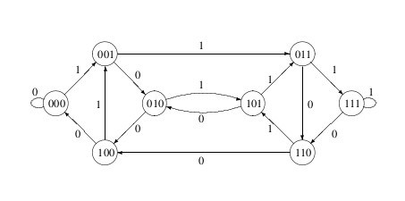
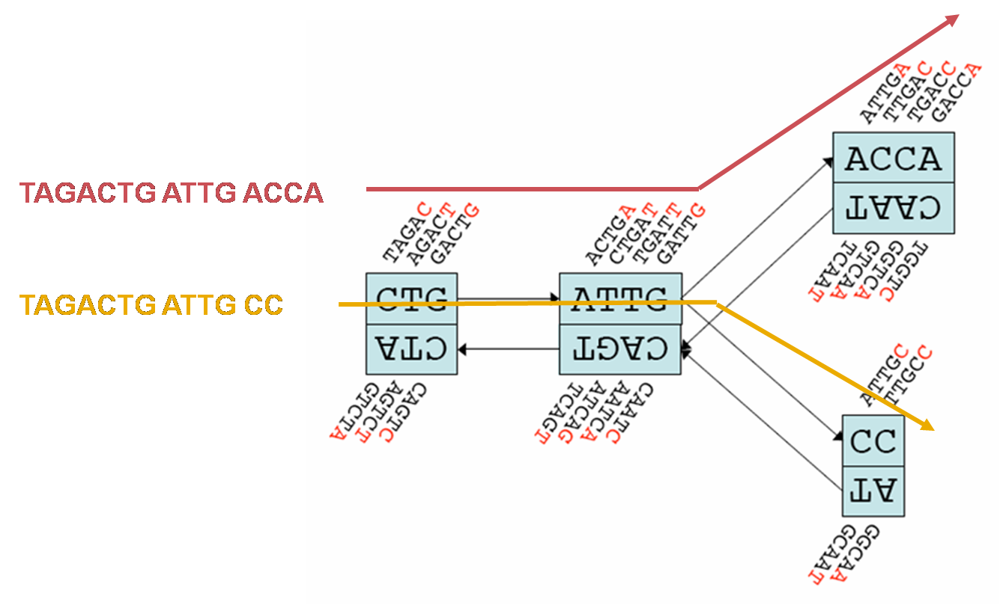
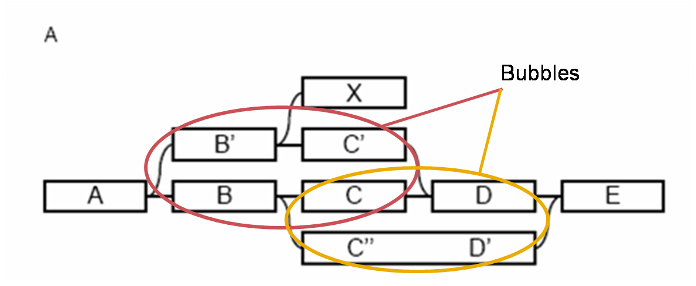

DNA sequence assembly from short fragments (< 200 bp) is often the first step of any bioinformatic analysis. The goal of assembly is to take the millions of short reads produced by sequencing instruments and re-construct the DNA from which the reads originated.
The sequence assembly issue was neatly summed up by the following quote:
"The problem of sequence assembly can be compared to taking many copies of a book, passing them all through a shredder, and piecing a copy of the book back together from only shredded pieces. The book may have many repeated paragraphs, and some shreds may be modified to have typos. Excerpts from another book may be added in, and some shreds may be completely unrecognizable." – Wikipedia: Sequence assembly.
An addition to the above for paired end sequencing is that now some of the shreds are quite long but only about 10% of the words from both ends of the shred are known.
This tutorial describes de novo assembly of Illumina short reads using the Velvet assembler (Zerbino et al. 2008, 2009) and the Velvet Optimiser (Gladman & Seemann, 2009) from within the Galaxy workflow management system.
Galaxy is an online bioinformatics workflow management system. Essentially, you upload your files, create various analysis pipelines and run them, then visualise your results.
Galaxy is really an interface to the various tools that do the data processing; each of these tools could be run from the command line, outside of Galaxy. Galaxy makes it easier to link up the tools together and visualise the entire analysis pipeline.
Galaxy uses the concept of 'histories'. Histories are sets of data and workflows that act on that data. The data for this workshop is available in a shared history, which you can import into your own Galaxy account
Learn more about Galaxy here
Figure 1: The Galaxy interface
Tools on the left, data in the middle, analysis workflow on the right.
Velvet is software to perform dna assembly from short reads by manipulating de Bruijn graphs. It is capable of forming long contigs (n50 of in excess of 150kb) from paired end short reads. It has several input parameters for controlling the structure of the de Bruijn graph and these must be set optimally to get the best assembly possible. Velvet can read Fasta, FastQ, sam or bam files. However, it ignores any quality scores and simply relies on sequencing depth to resolve errors. The Velvet Optimiser software performs many Velvet assemblies with various parameter sets and searches for the optimal assembly automatically.
A de Bruijn graph is a directed graph which represents overlaps between sequences of symbols. The size of the sequence contained in the nodes of the graph is called the word-length or k-mer size. In Figure 2, the word length is 3. The two symbols are 1 and 0. Each node in the graph has the last two symbols of the previous node and 1 new symbol. Sequences of symbols can be produced by traversing the graph and adding the “new” symbol to the growing sequence.
Figure 2: A de Bruijn graph of word length 3 for the symbols 1 and 0.

From: https://cameroncounts.wordpress.com/2015/02/28/1247/
Velvet constructs a de Bruijn graph of the reads. It has 4 symbols (A, C, G and T - N’s are converted to A’s) The word length (or k-mer size) is one of Velvet’s prime parameters.
Velvet is not the only assembly software that works in this manner. Euler, Edena and SOAP de novo are examples of others.
Figure 3: Section of a simple de Bruijn graph of reads with k-mer size 5. Coloured sequences are constructed by following the appropriately coloured line through the graph. (Base figure Zerbino et al 2008.)

Figure 4: Representation of “bubbles” in a Velvet de Bruijn graph. (Base figure Zerbino et al 2008.)

The size of the k-mers that construct the graph is very important and has a large effect on the outcome of the assembly. Generally, small k-mers create a graph with increased connectivity, more ambiguity (more divergences) and less clear “paths” through the graph. Large k-mers produce graphs with less connectivity but higher specificity. The paths through the graph are clearer but they are less connected and prone to breaking down.
The coverage cutoff c used during the error correction step of Velvet also has a significant effect on the output of the assembly process. If c is too low, the assembly will contain nodes of the graph that are the product of sequencing errors and misconnections. If c is too high, it can create mis-assemblies in the contigs and destroys lots of useful data.
Each dataset has its own optimum values for the k-mer size and the coverage cutoff used in the error removal step. Choosing them appropriately is one of the challenges faced by new users of the Velvet software.
The Velvet Optimiser chooses the optimal values for k and c automatically by performing many runs of Velvet (partially in parallel) and interrogating the subsequent assemblies. It uses different optimisation functions for k and c and these can be user controlled.
It requires the user to input a range of k values to search (to cut down on running time).
http://en.wikipedia.org/wiki/Sequence_assembly
Zerbino DR, Birney E, Velvet: algorithms for de novo short read assembly using de Bruijn graphs, Genome Research, 2008, 18:821-829
Zerbino DR, McEwen GK, Margulies EH, Birney E, Pebble and rock band: heuristic resolution of repeats and scaffolding in the velvet short-read de novo assembler. PLoS One. 2009; 4(12):e8407.
Gladman SL, Seemann T, Velvet Optimiser, http://www.vicbioinformatics.com/software.shtml 2009.
{% endblock %} {% block modals %} {% endblock %} {% block scripts %} {% endblock %}